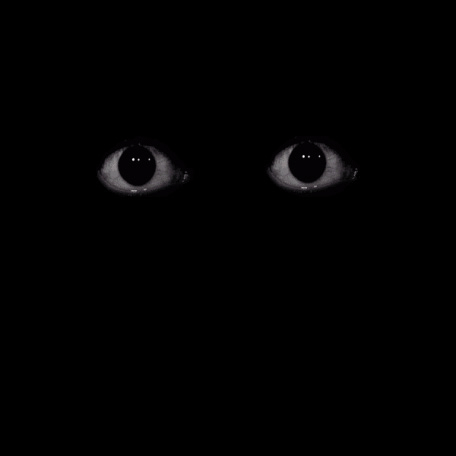

Hej ! Du har fått i uppdrag att hålla koll på kamerorna i en lokal under natten. Följ din magkänsla så borde allt gå bra, gl hf :)
Välj kamera
Rörelsedetektor gick igång på kamera 3



Det verkar som att kamera 7 blir störd av en okänd källa. Välj ett sätt för att försöka fixa kameran: